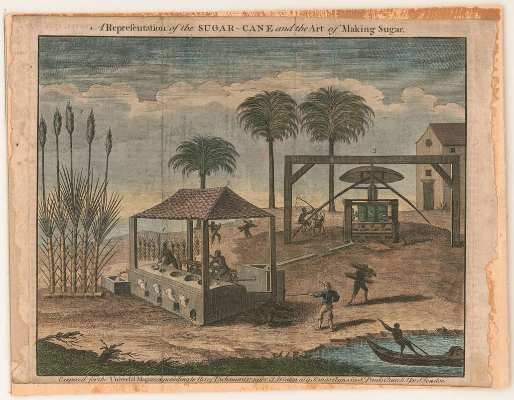

Comments on Sidney Mintz’s “Sweetness and Power” and Carlos Marichal’s “Mexican Cochineal and the European Demand for American Dyes, 1550-1850”
“The wealth of societies in which the capitalist mode of production prevails appears as an ‘immense collection of commodities’ […] Our investigation therefore begins with the analysis of the commodity” (Marx 1990, 124). So is the incipit of one of the most famous and important books in political economy. If Marx saw in the commodity the most crucial and elementary unit of abstraction in the capitalist mode of production, so much that he spent the first and most tedious pages of his magnus opus dedicated to its analysis and decortication, the commodity per se, that is, as a focus of historical and economic analysis, is rather rare in economics and economic history. For instance, mainstream economics reduces commodities to any objects or services bringing utility to consumers, abstracting from its historical and political dimensions.
Nonetheless, the two texts I will review in this critical summary are attempts to fill this gap and put the commodity back into the heart of not only economics, but also of social and historical analysis. These two texts share indeed a common characteristic: they both focus on a single commodity. Mintz’ book chapter Power (from Sweetness and Power, The Place of Sugar in Modern History (1985)) focuses on sugar from an anthropological perspective whereas Marichal’s book chapter Mexican Cochineal and the European Demand for American Dyes, 1550-1850 (2006) concentrates on cochineal from an economic history point of view. Another peculiar common characteristic of the two papers is that sugar and cochineal, a dyestuff product which is used for its crimson color, are both important inputs for a great number of final products: they are both illustrative examples of intermediary goods constituting a great part of global value chains.
In this critical summary, I will first summarize those two texts by outlining their main hypotheses and arguments in a comparative approach. I will then make some critical remarks and comments on what I believe are the positive aspects and chief contributions as well as the flaws and weaknesses of those two papers.
Tracing back sugar and cochineal: the role of demand
Marichal’s analysis of the rise and decline of cochineal production and trade rests upon three main hypotheses. The first one is that the prosperity of cochineal production and trade in Oaxaca, the main farming region of cochineal in Mexico, from the 16th century on was demand led. He advances two reasons for this strong demand, mostly driven by the upper classes of Europe, namely the Church, the nobility, and other elites. One reason is cultural and symbolic: cochineals produce a particularly magnificent crimson color that the nobility and the church associated with symbols of prestige and power. The other reason is physical: cochineal has physical properties which make it materially more advantageous compared to its competitors (kermes for example). This strong demand thus made cochineal highly profitable. Trade, production, and prices thus boomed from the 16th until the late 18th century which marked the start of a long run decline. Mintz’ analysis of how sugar became such an essential and highly demanded commodity is more nuanced. In fact, Mintz’s text is an attempt to answer the following question: how and why did sugar become one of the most widespread and consumed commodities in British society? An obvious and straightforward answer would be, as Marichal argues in the cochineal’s case, that humans are naturally inclined to accept sugar in their consumption habits because of its physical properties. As an anthropologist, Mintz knows that there is nothing natural in the growth of sugar demand. More elaborated answers would be for instance that sugar’s consumption habits spread from the upper classes to the lower classes through imitation (what Mintz calls “intensification”), or the constant tendency of sugar prices to fall. None of these answers are convincing enough for Mintz, whose argument is that the structural transformations of the working conditions and schedules of the British workers, during a transition process from an agricultural economy to an industrial one from circa the 16th century to the 19th century, were the real reason behind sugar’s tremendous prosperity as an essential commodity with strong meaning and signification for its consumers. Mintz explores the dual “meaning” of sugar. On the one hand, sugar replaced honey as a signification of sweetness, happiness, endearment, and tenderness (the “inside meaning” of sugar in anthropological terms) for the common British people. On the other hand, sugar became a symbol of power and prosperity for the imperialistic British ruling classes which had an interest in sugar production and trading made possible by the exploitation of African slaves in the Caribbean plantations. This represents the “outside meaning” of sugar.
Making sugar and cochineal available: imperialism, colonization and slavery
Secondly, Marichal argues that the stability and success of cochineal’s mode of production were the results of the repartimiento system. The latter was the product of active Spanish colonial policy and merchants’ activity: local Oaxaca bureaucrats obtained funds from Mexican merchants and lent those funds to indigenous cochineal farmers. Indigenous farmers had then to produce cochineals and pay back the functionaries in kind. Marichal argues that the end of the repartimiento system was one of the main reasons for the decline of cochineal production after the late 18th century, which as further exacerbated by the invention of synthetic dyes during the second industrial revolution during the 19th century. This is the third and last hypothesis of Marichal. For Mintz, the availability of sugar was also the product of deliberate British imperialistic policy and is linked to the “outside meaning” explained above. However, the anthropologist argues that sugar demand itself was a product of British government policy: demand on the side of the British masses had to be planned, constructed and stimulated as well. The introduction of rum in the British army, of sugar in almshouses and the abolition of tariffs and duties are example of this active policy so that both “outside” and “inside” meanings of sugar could become unified. Critics and comments
These two texts are both instructive and captivating. They offer an enlightening history of sugar and cochineal, giving a lot of data and information on the economic history, modes of production and demand formation processes of those two commodities. The heuristic approach of taking a commodity as a unit of analysis is certainly the most interesting aspect of the two papers.
For instance, by focusing on cochineal production in Oaxaca, Marichal deconstructs some prevalent commonplaces of Spanish colonial history and mercantilist policy. One learns that Spaniards were not only interested in silver and gold, which is a widespread cliché in economic history , and that they in fact also sought to capture and exploit other profitable businesses as the market for dyes. The description of the repartimiento system and of its functional role in the stability of cochineal production are convincing and show to what extent Spanish colonization, traditionally considered as mercantilist, was capitalist regarding some sectors (here cochineal production and exchange). However, his argument has some blind spots. First, he totally neglects the importance of class struggle within the repartimiento system and seems to consider the Mexican Revolution of 1820 only as an exogenous shock to the system, without considering the possibility that the fall of the repartimiento system could have been the result of its own contradictions and could have been (this is only a hypothetical possibility) somehow linked to internal class struggle, social movements and uprisings or even the Mexican Revolution. Second, the history of cochineal production and use in Latin America prior to colonialism and how it became monopolized by the Spaniards are overlooked. Finally, it would have been interesting to grant some attention to the resilience of cochineal production despite its decline after the second industrial revolution, since the product is still used today and somehow managed to escape its demise to some extent.
Mintz, however, offers an even more insightful analysis and it is not by chance that the book from which this chapter is taken from has become a classic, giving rise to an entire new field in anthropology, namely the anthropology of food. The argument is explained through a wide variety of anthropological concepts (intensification, extensification, outside and inside meanings…) which are interesting when applied to an economic subject such as the sugar commodity. The most powerful aspect of this text is its confrontation to some classical evidence that are omnipresent and taken for granted in economics and economic history: the naturality of sugar demand which is generally considered as given and self-evident, the important role given to price fluctuation and even to free choice and individual agency. The role of prices, meanings, demand, individual choices and liberty are carefully examined and put into question.
Unfortunately, Mintz does not support his own thesis. He even admits at the end that his hypothesis, the success of sugar in British society as a result of structural changes in schedule, working conditions and daily life of the British workers, is “difficult or impossible to prove” (p. 186) and he regresses his argument stating that the nature of sugar must also have played a role in its success. Such contradictions are present throughout the text and tend to make difficult any attempt to clearly grasp Mintz’ arguments and positions. Another example of such contradictions is the distinctive place of sugar between “intensification” (explained above) and “extensification”, when meanings and habits are indigenous to a specific group or class and spread without imitation. Mintz states that sugar was particular in its high degree of extensification among the British masses and that the latter developed meanings towards sugar independently from the upper classes. However, Mintz does not develop further this interesting idea and his description of sugar’s meanings through literature is not sufficient and convincing enough to explain what sugar meant to the working class.
Summing up
To sum up, Marichal’s book chapter on the cochineal is part of a wider project destined to put commodities back into the heart of economics and economic history. The author has three main hypothesis covering cochineal’s economic history. First, the tremendous growth in production and trade of this commodity was led by the demand of European upper classes. Second, the stability of the production process in Oaxaca was based on the repartimiento system. Finally, the decline of cochineal production and trade was the consequence of the second industrial revolution thanks to the invention of synthetic dies. Whereas cochineal is nowadays more of a relic from the past despite some relative resilience that should deserve some further attention (cochineal’s carminic acid is still used in some final products like syrup for example), sugar represents today the paroxysm of consumption under capitalism and is perhaps the most emblematic and embodiment of the commodity, as a crucial input in value chains as well as a final product. Mintz’ Sweetness and Power has since become a classic in anthropology, laying the foundation of a new field focused around the anthropology of food. I tried through this critic to show that Mintz’ argument is more than just a link between British demand for sugar and the exploitation of African slaves in the Caribbean plantations. Mintz’ analysis provides deeper investigations of the role of meanings attributed to sugar as well as for the role of both demand and supply, the political and power interests in the rise of one of nowadays’ most consumed, omnipresent, and controversial commodity.
References
Marichal, Carlos. 2006. “Mexican Cochineal and the European Demand for American Dyes, 1550-1850.” In From Silver to Cocaine : Latin American Commodity Chains and the Building of the World Economy, 1500-2000. Duke University Press.
Marx, Karl. 1990. Capital: A Critic of Political Economy Volume 1. Penguin Classics.
Mintz, Sidney. 1985. “Power.” In Sweetness and Power: The Place of Sugar in Modern History, 151–86. Viking.
Comments on Sidney Mintz’s “Sweetness and Power” and Carlos Marichal’s “Mexican Cochineal and the European Demand for American Dyes, 1550-1850”
“The wealth of societies in which the capitalist mode of production prevails appears as an ‘immense collection of commodities’ […] Our investigation therefore begins with the analysis of the commodity” (Marx 1990, 124). So is the incipit of one of the most famous and important books in political economy. If Marx saw in the commodity the most crucial and elementary unit of abstraction in the capitalist mode of production, so much that he spent the first and most tedious pages of his magnus opus dedicated to its analysis and decortication, the commodity per se, that is, as a focus of historical and economic analysis, is rather rare in economics and economic history. For instance, mainstream economics reduces commodities to any objects or services bringing utility to consumers, abstracting from its historical and political dimensions.
Nonetheless, the two texts I will review in this critical summary are attempts to fill this gap and put the commodity back into the heart of not only economics, but also of social and historical analysis. These two texts share indeed a common characteristic: they both focus on a single commodity. Mintz’ book chapter Power (from Sweetness and Power, The Place of Sugar in Modern History (1985)) focuses on sugar from an anthropological perspective whereas Marichal’s book chapter Mexican Cochineal and the European Demand for American Dyes, 1550-1850 (2006) concentrates on cochineal from an economic history point of view. Another peculiar common characteristic of the two papers is that sugar and cochineal, a dyestuff product which is used for its crimson color, are both important inputs for a great number of final products: they are both illustrative examples of intermediary goods constituting a great part of global value chains.
In this critical summary, I will first summarize those two texts by outlining their main hypotheses and arguments in a comparative approach. I will then make some critical remarks and comments on what I believe are the positive aspects and chief contributions as well as the flaws and weaknesses of those two papers.
Tracing back sugar and cochineal: the role of demand
Marichal’s analysis of the rise and decline of cochineal production and trade rests upon three main hypotheses. The first one is that the prosperity of cochineal production and trade in Oaxaca, the main farming region of cochineal in Mexico, from the 16th century on was demand led. He advances two reasons for this strong demand, mostly driven by the upper classes of Europe, namely the Church, the nobility, and other elites. One reason is cultural and symbolic: cochineals produce a particularly magnificent crimson color that the nobility and the church associated with symbols of prestige and power. The other reason is physical: cochineal has physical properties which make it materially more advantageous compared to its competitors (kermes for example). This strong demand thus made cochineal highly profitable. Trade, production, and prices thus boomed from the 16th until the late 18th century which marked the start of a long run decline. Mintz’ analysis of how sugar became such an essential and highly demanded commodity is more nuanced. In fact, Mintz’s text is an attempt to answer the following question: how and why did sugar become one of the most widespread and consumed commodities in British society? An obvious and straightforward answer would be, as Marichal argues in the cochineal’s case, that humans are naturally inclined to accept sugar in their consumption habits because of its physical properties. As an anthropologist, Mintz knows that there is nothing natural in the growth of sugar demand. More elaborated answers would be for instance that sugar’s consumption habits spread from the upper classes to the lower classes through imitation (what Mintz calls “intensification”), or the constant tendency of sugar prices to fall. None of these answers are convincing enough for Mintz, whose argument is that the structural transformations of the working conditions and schedules of the British workers, during a transition process from an agricultural economy to an industrial one from circa the 16th century to the 19th century, were the real reason behind sugar’s tremendous prosperity as an essential commodity with strong meaning and signification for its consumers. Mintz explores the dual “meaning” of sugar. On the one hand, sugar replaced honey as a signification of sweetness, happiness, endearment, and tenderness (the “inside meaning” of sugar in anthropological terms) for the common British people. On the other hand, sugar became a symbol of power and prosperity for the imperialistic British ruling classes which had an interest in sugar production and trading made possible by the exploitation of African slaves in the Caribbean plantations. This represents the “outside meaning” of sugar.

Making sugar and cochineal available: imperialism, colonization and slavery
Secondly, Marichal argues that the stability and success of cochineal’s mode of production were the results of the repartimiento system. The latter was the product of active Spanish colonial policy and merchants’ activity: local Oaxaca bureaucrats obtained funds from Mexican merchants and lent those funds to indigenous cochineal farmers. Indigenous farmers had then to produce cochineals and pay back the functionaries in kind. Marichal argues that the end of the repartimiento system was one of the main reasons for the decline of cochineal production after the late 18th century, which as further exacerbated by the invention of synthetic dyes during the second industrial revolution during the 19th century. This is the third and last hypothesis of Marichal. For Mintz, the availability of sugar was also the product of deliberate British imperialistic policy and is linked to the “outside meaning” explained above. However, the anthropologist argues that sugar demand itself was a product of British government policy: demand on the side of the British masses had to be planned, constructed and stimulated as well. The introduction of rum in the British army, of sugar in almshouses and the abolition of tariffs and duties are example of this active policy so that both “outside” and “inside” meanings of sugar could become unified. Critics and comments
These two texts are both instructive and captivating. They offer an enlightening history of sugar and cochineal, giving a lot of data and information on the economic history, modes of production and demand formation processes of those two commodities. The heuristic approach of taking a commodity as a unit of analysis is certainly the most interesting aspect of the two papers.
For instance, by focusing on cochineal production in Oaxaca, Marichal deconstructs some prevalent commonplaces of Spanish colonial history and mercantilist policy. One learns that Spaniards were not only interested in silver and gold, which is a widespread cliché in economic history , and that they in fact also sought to capture and exploit other profitable businesses as the market for dyes. The description of the repartimiento system and of its functional role in the stability of cochineal production are convincing and show to what extent Spanish colonization, traditionally considered as mercantilist, was capitalist regarding some sectors (here cochineal production and exchange). However, his argument has some blind spots. First, he totally neglects the importance of class struggle within the repartimiento system and seems to consider the Mexican Revolution of 1820 only as an exogenous shock to the system, without considering the possibility that the fall of the repartimiento system could have been the result of its own contradictions and could have been (this is only a hypothetical possibility) somehow linked to internal class struggle, social movements and uprisings or even the Mexican Revolution. Second, the history of cochineal production and use in Latin America prior to colonialism and how it became monopolized by the Spaniards are overlooked. Finally, it would have been interesting to grant some attention to the resilience of cochineal production despite its decline after the second industrial revolution, since the product is still used today and somehow managed to escape its demise to some extent.
Mintz, however, offers an even more insightful analysis and it is not by chance that the book from which this chapter is taken from has become a classic, giving rise to an entire new field in anthropology, namely the anthropology of food. The argument is explained through a wide variety of anthropological concepts (intensification, extensification, outside and inside meanings…) which are interesting when applied to an economic subject such as the sugar commodity. The most powerful aspect of this text is its confrontation to some classical evidence that are omnipresent and taken for granted in economics and economic history: the naturality of sugar demand which is generally considered as given and self-evident, the important role given to price fluctuation and even to free choice and individual agency. The role of prices, meanings, demand, individual choices and liberty are carefully examined and put into question.
Unfortunately, Mintz does not support his own thesis. He even admits at the end that his hypothesis, the success of sugar in British society as a result of structural changes in schedule, working conditions and daily life of the British workers, is “difficult or impossible to prove” (p. 186) and he regresses his argument stating that the nature of sugar must also have played a role in its success. Such contradictions are present throughout the text and tend to make difficult any attempt to clearly grasp Mintz’ arguments and positions. Another example of such contradictions is the distinctive place of sugar between “intensification” (explained above) and “extensification”, when meanings and habits are indigenous to a specific group or class and spread without imitation. Mintz states that sugar was particular in its high degree of extensification among the British masses and that the latter developed meanings towards sugar independently from the upper classes. However, Mintz does not develop further this interesting idea and his description of sugar’s meanings through literature is not sufficient and convincing enough to explain what sugar meant to the working class.